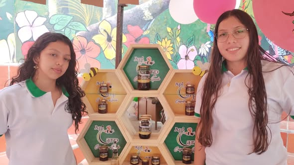
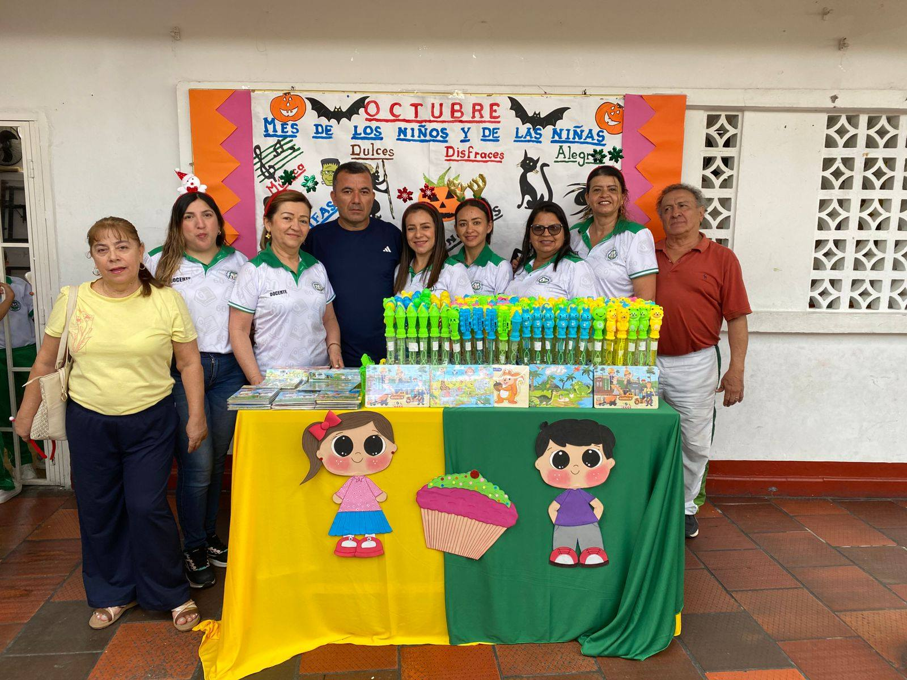
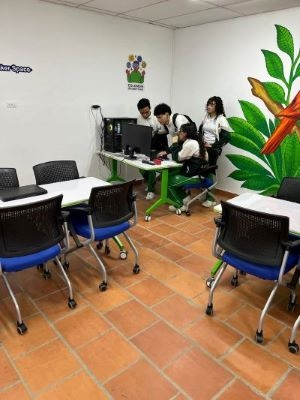

Bachillerato Técnico y Académico
La ITAL ofrece un doble enfoque en los grados superiores, preparando a los estudiantes para la universidad y el mundo laboral simultáneamente.
Técnica Agropecuaria
Este programa se centra en la aplicación de tecnologías sostenibles para la producción agrícola y pecuaria. Los estudiantes desarrollan habilidades en:**
- Manejo de cultivos y suelos.
- Cría de especies menores (avicultura, piscicultura).
- Procesos básicos de agroindustria (conservas y derivados).
**Salidas:** Productor agropecuario, Asistente en granjas, Continuación de estudios en Agronomía.

Técnica en Comercio
El énfasis en Comercio dota a los estudiantes de herramientas esenciales en el área administrativa, contable y de negocios. El currículo incluye:
- Fundamentos de contabilidad y costos.
- Gestión documental y archivo.
- Principios de emprendimiento y marketing.
**Salidas:** Auxiliar administrativo, Asistente contable, Iniciación de pequeños negocios.

Técnica en Sistemas (TICS)
Este es el programa más moderno, enfocado en el desarrollo de soluciones tecnológicas y el manejo de infraestructura informática. Se abordan temas como:
- Programación web básica y bases de datos.
- Mantenimiento de equipos y redes.
- Desarrollo de proyectos de innovación tecnológica.
**Salidas:** Auxiliar de soporte técnico, Desarrollador junior, Estudios superiores en Ingeniería de Sistemas.
